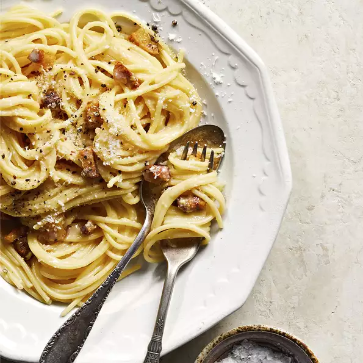

Carbonara

Description:
Carbonara made without eggs!, but with milk and cream instead
Ingredients
- 1 (8 ounces) package of linguine pasta
- 1 cup of frozen peas
- 5 slices of bacon
- 1 clove of garlic, minced
- 1 cup of milk
- 1/2 (8 ounce) package of cream cheese
- 1/4 cup of grated parmesan cheese
Steps
- Bring a large pot of lightly salted water to a boil. Cook the linguine at a boil until tender yet firm to the bite, about 11 minutes, adding peas in the
last minute of cooking. Drain and keep warm in a bowl.
- Place bacon in a large skillet and cook over medium-high heat, turning occasionally, until evenly browned, about 10 minutes. Transfer the bacon to paper
towels, reserving 1 tablespoon of drippings in the skillet.
- Add garlic to the skillet; saute for 1 minute. Reduce heat to low and stir in milk and cream cheese until blended.
- Crumble bacon and add to the linguine along with sauce and Parmesan cheese; stir to coat.